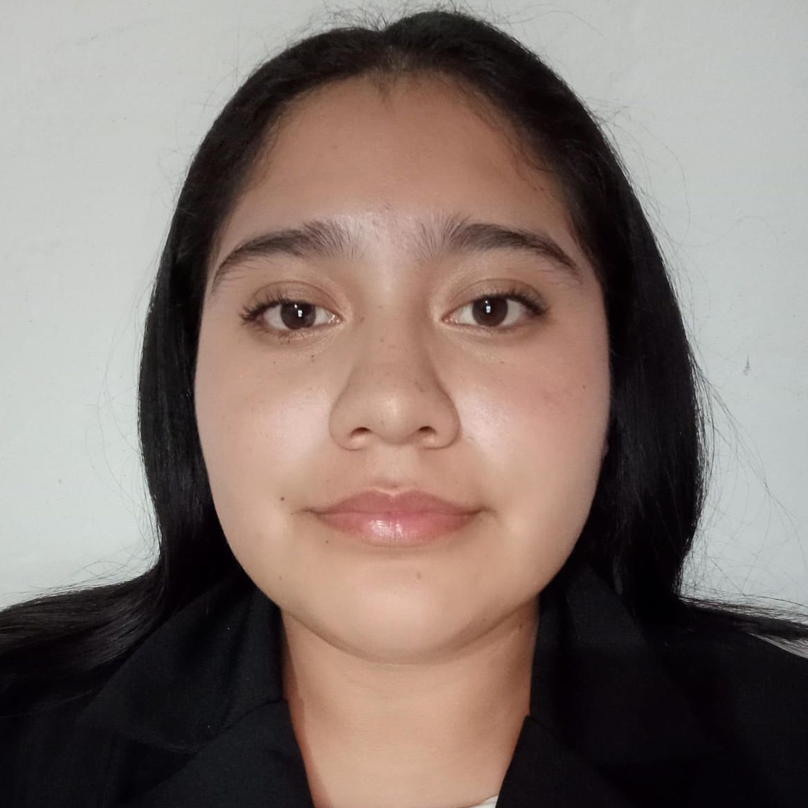

Mi primer repo
Centro de Produccion Porcina (CPP)
El Sistema de Gestión Porcina (CPP) es un sistema propuesto para optimizar la gestión en el sector de las granjas,
diseñado para administrar de manera eficiente las áreas: Clientes, Pedidos, Inventario de puercos, Inventario de alimentacion, Historial Medico,
Marketing, Personal y Proveedores.
Problemática del proyecto
Las granjas enfrentan problemas para identificar la cantidad, estado y alimentacion de los cerdos.
Los registros manuales son poco confiables y dificultan el acceso a información en tiempo real.

Objetivo del proyecto
Desarrollar un sistema de gestión de inventario de cerdos para mejorar el control y seguimiento .
Este sistema permitirá optimizar la disponibilidad de información en tiempo real sobre la salud y el estado de
los animales, facilitando la gestión de recursos como la compra y venta de ganado. La implementación se realizará
en las instalaciones rurales ubicadas en el municipio de Daxtho, Hidalgo, garantizando así un manejo más eficiente
de los recursos y un aumento en la productividad general de la granja.
Subsistemas del proyecto
El sistema se fragmento utilizando la estrategia de “divide y vencerás” lo cual busca encontrar unidades de
desarrollo lo bastante concisas que permite ser desarrolladas de manera independiente pero que al mismo tiempo
sean fácil de acoplar al sistema completo.
Integrantes

Alvarez Hernandez Ediwin
220111015@itsoeh.edu.mx
Cruz Godinez Samuel
22011514@itsoeh.edu.mx
Falcon-Caracas April Milagros
22011797@itsoeh.edu.mx
Olguin Zenil Maria Isabel
22011248@itsoeh.edu.mx

Pardo Gonzales Daniela Yamileth
22011589@itsoeh.edu.mx